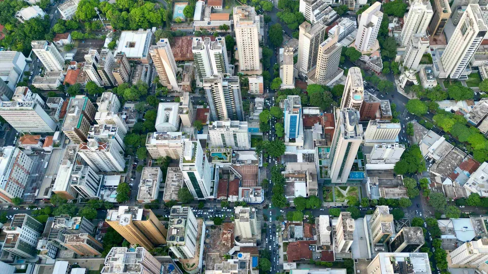
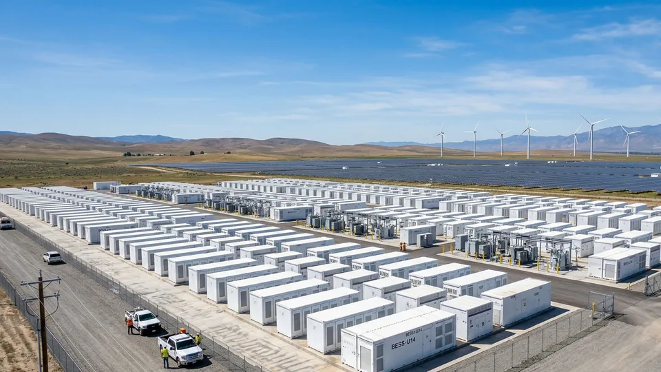
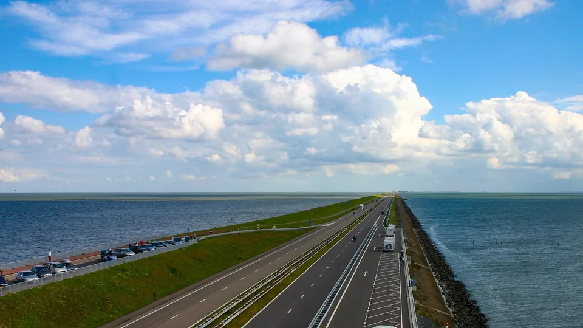
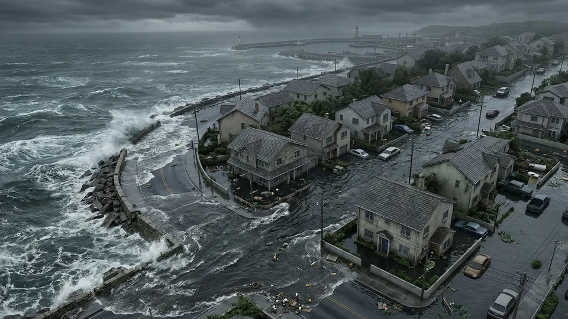
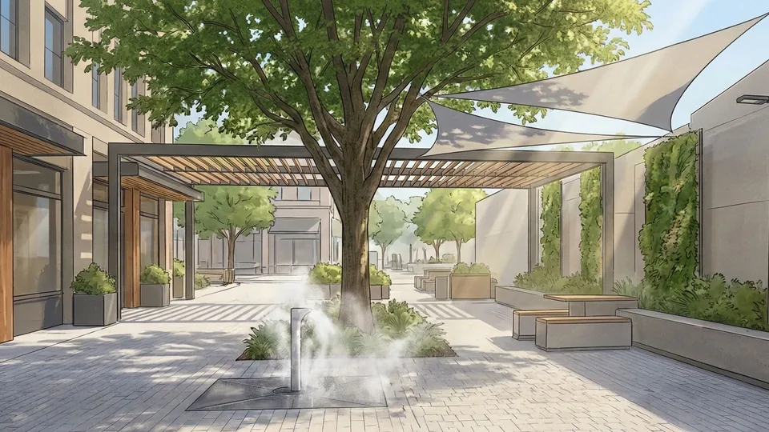

Resilient agriculture
Understanding how floods, heat, severe storms and water extremes affect farms, food production and rural communities.
Agriculture is among the sectors most directly exposed to environmental extremes. A single flood, heat wave or severe storm can destroy a season’s crops, damage facilities and disrupt supply chains.
Farmers and agribusinesses need hazard information at the scale of fields, facilities and watersheds, and an understanding of how those extremes are changing.
We apply our flood, heat, wind and water modeling to agricultural landscapes, helping producers and planners anticipate risk and invest in resilience.
What we bring to agriculture
Flooding and extreme rainfall
Mapping flood and waterlogging risk across farmland, rural roads and facilities.
Heat and cold extremes
Assessing heat waves and freeze events that stress crops, livestock and workers.
Severe wind and storms
Understanding exposure to derechos, hurricanes and damaging winds for crops and agricultural structures.
Water resources and drainage
Supporting drainage, irrigation and groundwater planning under changing climate conditions.
Planning across time horizons
We study environmental extremes from subseasonal and seasonal forecasts to decadal and multi-decadal climate projections, so plans hold up in the coming weeks and in the coming decades.
Subseasonal
Weeks-ahead outlooks of heat, frost and heavy rainfall to time planting, spraying, irrigation and harvest.
Seasonal
Season-ahead outlooks of rainfall, temperature and drought to guide crop choice, water allocation and inputs.
Decadal
Near-term climate trends to plan drainage, irrigation and on-farm investments.
Multi-decadal
Long-term projections of shifting growing conditions, water availability and extremes for land use and farm strategy.
Have a question or a project in mind?
Tell us about the challenge you are facing, and we will explore together how our modeling and AI can help.

Communities & public sector
Street-scale flood and heat insight for local governments, planners and emergency managers.
Learn more
Energy & utilities
Hurricane winds, flooding and heat impacts on generation, grids and offshore energy.
Learn more
Infrastructure & transportation
Bridges, roads, coastal and hydraulic structures under floods, surge, waves and debris.
Learn more
Insurance & finance
High-resolution, physics-based hazard insight for pricing, stress testing and disclosure.
Learn more
Real estate & development
Site screening, resilient design and portfolio exposure for developers and owners.
Learn more